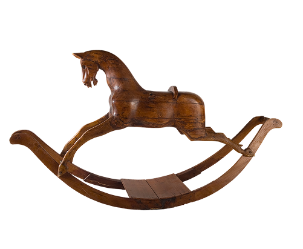
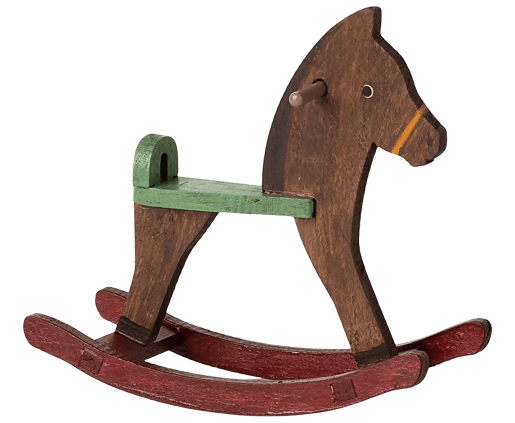
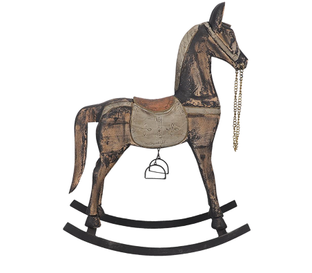

1800-1900 - L'INVENZIONE DELLO STUPORE
CAVALLO A DONDOLO
Se c’è un oggetto che definisce l’immaginario dell'infanzia tra il XIX e l'inizio del XX secolo, è senza dubbio il cavallo a dondolo. In questo secolo, il gioco non è più solo divertimento, ma diventa uno strumento per allenare il portamento, l'equilibrio e il coraggio, riflettendo l'importanza che la cultura dell'epoca attribuiva all'equitazione.
L'ERA D'ORO DELL'ARTIGIANATO
Sebbene le prime forme di cavalli su archi di legno risalgano al XVII secolo, è nell'Ottocento che raggiungono la perfezione tecnica ed estetica:
- Il Realismo: Gli artigiani iniziarono a utilizzare vero crine di cavallo per la criniera e la coda, pelle per le selle e occhi di vetro per dare un'espressione vitale all'animale.
- Legni pregiati: Venivano scolpiti prevalentemente in legno di pino o faggio, poi gessati e dipinti a mano (il celebre manto "grigio pomellato" divenne il preferito della Regina Vittoria).


UN GIOCO EDUCATIVO
- Preparazione alla vita adulta: Per i maschi era il primo passo verso l'addestramento militare e l'equitazione reale.
- Simbologia: Possedere un cavallo a dondolo di grandi dimensioni nel proprio salotto era un chiaro segno della ricchezza e del prestigio della famiglia.

L'INVENZIONE DELLO "SAFETY STAND"
Fino alla metà dell'800, i cavalli oscillavano su lunghe lame curve (i dondoli). Tuttavia, questo sistema occupava molto spazio e rischiava di schiacciare le dita dei bambini. Nel 1880, l'americano Philip Marqua brevettò il "Safety Rocker" (o supporto di sicurezza): il cavallo non poggiava più a terra, ma era sospeso su bracci metallici che oscillavano avanti e indietro. Questo lo rendeva più compatto, stabile e sicuro, rivoluzionandone la diffusione nelle case borghesi.
